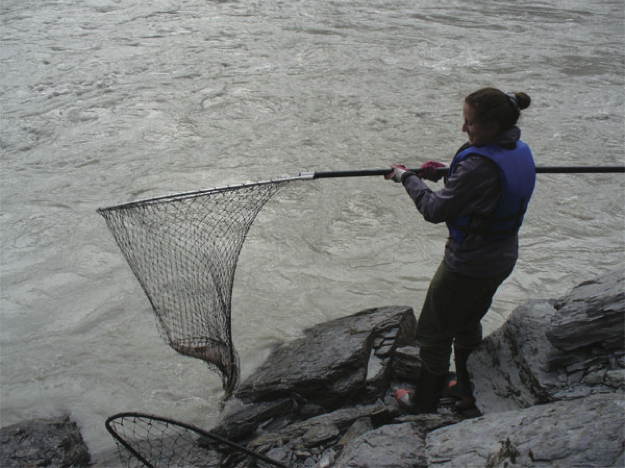

For the last fifteen years, my primary research interests have been in phylogenetics, and phylogenetic modeling. I am particularly interested in models of DNA site substitution and the multispecies coalescent model describing the formation of gene trees within a rooted metric species tree. Researchers in our group have been funded by both the NIH (R01) and the NSF.
Recently, with post-doc J. Mitchell and graduate student H. Banos, our group has implemented a new statistically consistent method of species network inference under the Network Multispecies Coalescent Model. The R package MSCquartets implements some statistical hypothesis tests for testing if quartets on gene trees might have arisen under the NMSC, and constructs a distance table for NANUQ, a species network topology estimator our group developed. (A Nanook, the Inupiaq word for polar bear, is the UAF mascot.) Very recent work has focused on the AIC-BIC model tests and proving that the log-det distance can be used to estimate species trees from sequences under a general model on site substitution on an ultrametric tree.
With graduate student S. Yourdkhani we worked to prove that the profile mixture model of Susko, Linker and Roger is identifiable using algebraic techniques. She has also worked with J. Rhodes creating a metric quartet distance on gene trees. Current graduate student Dakota Dragomir is investigating models of evolutionary tree generation. In summer 2019, I began collaborating with J. Degnan, M. Owen, and C. Solis-Lemus on further gene tree/species tree research with the help of an AIM SQuaRE grant. Progress on this project has been slowed by covid.
For a list of publications since I became interested in phylogenetics, click here, and visit the software link above for information on software development.
Interestingly, I got involved in mathematical biology, and phylogenetics in particular, as an outgrowth of a teaching project started by J. Rhodes and colleagues. This work resulted in the undergraduate textbook "Mathematical Models in Biology: An Introduction" published by Cambridge University Press in 2004. An electronic solutions manual and a list of known errata is available on request.
| In 2007, while in residence at the Institute for Mathematics and its Applications,
I posed the salmon problem while at one of IMA's workshops. This problem took on a wonderful life of its own.
If you have access to MathSciNet, seach on the phrase 'salmon problem' to follow the thread.
Salmon Problem: Determine the ideal defining the fourth secant variety of P^3 x P^3 x P^3. Some details, including a prize for its solution. Set theoretic version solved! Congratulations to Shmuel Friedland for solving the set-theoretic version of the problem (spring 2010)! Further progress by Dan Bates and Luke Oeding (2010). Still further progress by Friedland, Gross (April 2011). And Claudio Raciu (2012). And by Daleo and Hauenstein (2016). |
 |
{kind=link}
{kind=link}